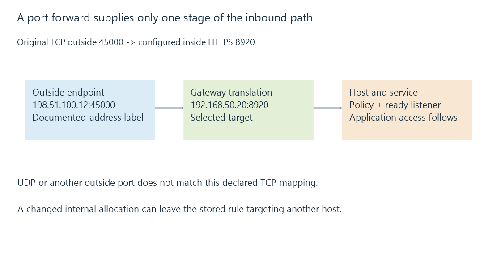

Port forwarding and the complete inbound path
Port forwarding maps a selected inbound endpoint to an internal service, with address stability, firewall policy and service readiness determining whether the complete request can succeed.
A remote app targets an outside address and port. A port-forward rule tells the gateway which internal service should receive the matching inbound traffic.
The rule identifies a translation destination. It is one stage of the connection path.
The rule matches more than a number
This original HTTPS-listener exercise uses an outside documentation address:
{
"protocol": "tcp",
"outside": {"address": "198.51.100.12", "port": 45000},
"inside": {"address": "192.168.50.20", "port": 8920}
}
Assume the selected internal service actually implements HTTPS on 8920. The mapping does not create or enable that listener.
| Arriving destination | Match under this declared rule? |
|---|---|
| TCP, shown outside address, port 45000 | Yes |
| UDP, same address and numeric port | No |
| TCP, same address, port 45001 | No |
The remote URL consequently selects the outside port, while the gateway forwards to the different internal port.

The target address must still identify the server
If 192.168.50.20 moves to another device or the server obtains .42 instead, the stored rule can remain structurally correct while targeting the wrong host.
A DHCP reservation helps keep the intended allocation stable. It does not automatically repair an earlier rule after renumbering.
The target must also be reachable from the gateway on the relevant internal route. Another routed segment can add its own policy and return-path conditions.
Every following stage still has a result
After translation, the host firewall must permit the intended traffic and the selected listener must be ready. The service then performs its application and user-access checks.
A working gateway rule with no listener can produce a refused or failed connection. A working listener reached through a wrong URL scheme can fail at the protocol stage. A valid connection can still receive an application rejection.
Emby’s network settings distinguish local listener ports from reported public ports. Reporting 45000 does not prove the router has this rule, and a router rule does not prove Emby is listening at its target.
A successful inside test takes another path
A LAN client connecting directly to 192.168.50.20:8920 does not exercise the outside mapping. A LAN client using the outside address instead needs NAT loopback or another supported path.
That is why “it works at home” and “the outside route works” are separate observations.
With double NAT, another gateway can sit before the one whose rule was inspected. Both boundaries need a coherent path rather than an extra rule at only the inner router.
See Also
- NAT and address/port translation state
- DHCP reservations and stable server addresses
- Double NAT and two translation boundaries
- Firewalls, traffic rules and connection state